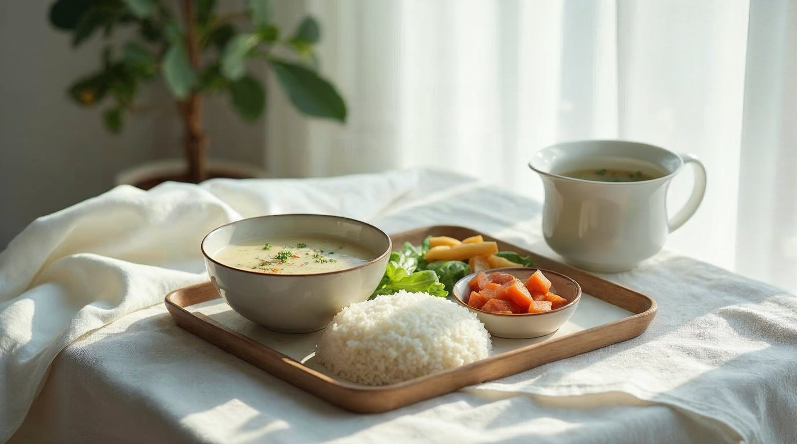
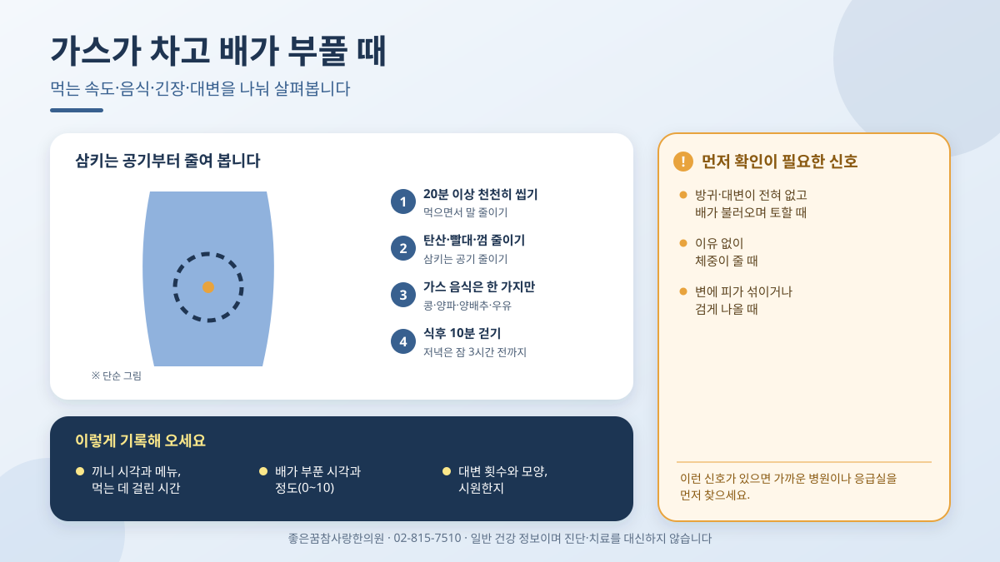

이종호 한의사 감수좋은꿈참사랑한의원 대표원장 (한의사 면허번호 19769)발행 2026-11-26 · 수정 2026-11-26
이 글의 차례
아침에 입고 나온 바지가 오후 세 시쯤이면 허리를 조여 옵니다. 슬그머니 단추를 하나 풀고 의자에 기대 보지만, 배는 풍선처럼 팽팽하고 회의 중에 꾸르륵 소리가 날까 신경이 쓰입니다. 저녁이 되면 임신한 것처럼 배가 나와 보인다는 분도 계십니다.
복부 팽만은 배가 가득 찬 듯 답답하고 부푼 느낌을 말합니다. 실제로 배 둘레가 늘어나는 경우도 있고, 둘레는 그대로인데 꽉 찬 느낌만 강한 경우도 있습니다. 아주 흔한 불편이지만 하루 종일 신경을 빼앗기 때문에 생활의 질을 꽤 떨어뜨립니다.
진료실에서 이런 말씀을 자주 듣습니다. "뭘 먹어도 배가 불러요. 사람들 앞에서 방귀가 나올까 봐 무서워요." 겉으로는 별것 아닌 듯 보여도, 당사자에게는 하루하루가 조심스러운 일입니다. 그 마음을 먼저 알아 드리고 싶습니다.
배가 부푸는 이유는 하나가 아닙니다. 가스가 많이 만들어지는 경우, 가스는 보통인데 장이 예민해 크게 느끼는 경우, 변비 때문에 아래가 막혀 있는 경우가 서로 섞여 있습니다. 이 글에서는 그 갈래를 나눠 보고, 생활에서 해 볼 수 있는 일들을 정리해 보겠습니다.
왜 배 속에 가스가 찰까요
배 속 가스는 크게 두 곳에서 옵니다. 하나는 밥을 먹고 말을 하며 함께 삼키는 공기입니다. 급하게 먹거나, 빨대로 마시거나, 껌을 자주 씹거나, 탄산음료를 즐기면 생각보다 많은 공기가 들어갑니다.
다른 하나는 대장에 사는 세균이 음식 찌꺼기를 발효시키며 만드는 가스입니다. 소장에서 다 소화되지 못한 탄수화물이 대장으로 내려가면 세균이 이것을 분해하면서 가스를 냅니다. 콩, 양파, 양배추, 우유, 일부 과일과 감미료가 이런 음식에 속합니다.
가스는 누구에게나 매일 생기고, 하루에도 여러 번 방귀로 빠져나가는 것이 정상입니다. 문제는 가스가 너무 많이 생기거나, 잘 빠져나가지 못하거나, 같은 양의 가스를 장이 유난히 크게 느끼는 경우입니다. 팽만을 호소하는 분 가운데에는 실제 가스 양은 보통인 분도 꽤 있다고 알려져 있습니다.
한의학에서는 배가 부풀고 답답한 모습을 창만(脹滿)이라 부르며, 기운이 막혀 돌지 못한 상태로 보아 왔습니다. 긴장하면 배가 더 부풀고, 몸이 차면 장의 움직임이 둔해진다고 여겼습니다. 그래서 저는 배 속만이 아니라 마음의 긴장과 몸의 온도를 함께 여쭙습니다.
팽만의 갈래, 이렇게 나눠 봅니다
먹은 직후에 부푸는 경우
식사를 마치자마자 명치부터 배꼽 위까지 꽉 차고 트림이 자주 나온다면, 위에서 음식이 내려가는 속도가 느리거나 공기를 많이 삼킨 경우를 먼저 생각합니다. 먹는 속도와 한 번에 먹는 양을 함께 봅니다.
오후로 갈수록 차오르는 경우
아침에는 편하다가 점심 이후 서서히 부풀어 저녁에 가장 심하다면, 장에서 발효되는 가스와 오래 앉아 있는 생활을 함께 살핍니다. 밤사이 가스가 빠지며 아침에 다시 편해지는 모습이 흔합니다.
변비와 함께 오는 경우
며칠에 한 번 변을 보거나, 변을 보고도 시원하지 않다면 아래쪽이 막혀 가스가 갇혀 있을 수 있습니다. 이때는 팽만보다 배변 습관을 먼저 손봅니다. 변이 시원하게 나온 날에 배가 편해지는지 기록해 보시면 실마리가 됩니다.
긴장과 함께 오는 경우
발표나 시험, 중요한 약속을 앞두고 배가 유독 부푸는 분이 있습니다. 장은 뇌와 가깝게 이어져 있어, 긴장하면 장의 움직임과 감각이 함께 흔들립니다. 주말이나 휴가 때 배가 편하다면 이 갈래를 의심해 봅니다.
팽만과 헷갈리기 쉬운 경우
배가 부푼 느낌은 비슷해도, 조금 다르게 살펴야 하는 경우가 있습니다. 진료실에서는 아래 모습을 함께 확인합니다.
배가 서서히 커지는데 가스가 빠져도 줄지 않고, 눌렀을 때 물이 출렁이는 듯하거나 다리까지 붓는다면 가스보다 다른 원인을 먼저 확인해야 합니다. 이때는 내과 검사가 먼저라고 말씀드립니다.
여성분이라면 생리 주기에 따라 배가 붓는지도 여쭙습니다. 생리 전 일주일쯤 배가 붓고 묵직한 것은 흔한 모습이지만, 아랫배 한쪽이 계속 묵직하고 생리 양이나 주기가 달라졌다면 산부인과 확인을 함께 권합니다.
우유나 밀가루를 먹은 날마다 배가 부푼다면 특정 음식에 대한 반응을 생각합니다. 체중이 줄고 설사가 이어지며 영양이 부족한 모습이 함께 보인다면 흡수 장애가 있는지 내과에서 확인해 보시길 권합니다.
숨과 자세도 배의 부피를 바꿉니다
배가 부푸는 것이 꼭 가스의 양 때문만은 아니라는 이야기가 있습니다. 보통은 음식이 들어오면 가로막이 위로 올라가고 배 근육이 살짝 조여 배 속 공간을 넓혀 줍니다. 그런데 이 조절이 거꾸로 일어나면 같은 양의 가스로도 배가 앞으로 툭 튀어나온다고 알려져 있습니다.
숨을 가슴으로만 얕게 쉬는 습관, 하루 종일 구부정하게 앉아 배를 접고 있는 자세는 배 속 움직임을 답답하게 만듭니다. 컴퓨터 앞에서 어깨가 말리고 배가 눌린 채 몇 시간을 보내면, 오후의 팽만이 더 커지는 것도 무리가 아닙니다.
그래서 저는 배가 부푸는 분께 숨 쉬는 모습을 한번 보여 달라고 부탁드리기도 합니다. 누워서 한 손은 가슴에, 한 손은 배에 올리고 코로 천천히 들이마셔 배가 부드럽게 올라오도록, 입으로 길게 내쉬며 배가 내려가도록 해 보세요. 하루 두세 번, 몇 분이면 충분합니다.
배에서 나는 소리와 냄새가 신경 쓰일 때
배에서 꾸르륵 소리가 나는 것은 장이 음식과 가스를 밀어내며 움직이는 소리로, 대부분은 자연스러운 일입니다. 조용한 사무실이나 시험장에서 유난히 크게 느껴질 뿐, 소리 자체가 병을 뜻하지는 않습니다.
방귀 냄새가 유독 심하다면 고기와 달걀, 마늘, 양파처럼 황 성분이 많은 음식을 많이 드신 날인지 살펴보세요. 냄새는 먹은 것에 따라 크게 달라집니다. 다만 냄새와 함께 설사가 오래가고 기름이 뜨는 변을 본다면 흡수에 문제가 없는지 확인해 보시길 권합니다.
소리와 냄새가 걱정되어 사람을 피하게 되었다면 그 마음도 함께 이야기해 주세요. 걱정이 커질수록 배가 더 긴장하고, 그러면 다시 가스가 차는 고리가 만들어지기 쉽습니다. 그 고리를 함께 풀어 가는 것도 진료의 일부입니다.
예를 들면 이런 경우입니다
실제 어느 분의 사연이 아니라, 진료실에서 자주 보는 모습을 바탕으로 그려 본 장면입니다.
예를 들어 다이어트를 하며 점심을 샐러드와 탄산수, 단백질 음료로 바꾼 직장인이라면, 날채소와 탄산, 감미료가 한꺼번에 들어가 가스가 늘었을 수 있습니다. 메뉴를 하나씩 되돌려 보며 무엇이 배를 부풀리는지 찾아봅니다.
하루 종일 앉아서 일하고 저녁에 몰아서 먹는 분이라면, 움직임이 적어 가스가 빠질 틈이 없고 늦은 식사가 밤새 발효되는 경우가 많습니다. 식사 뒤 십 분 걷기와 저녁 시각 당기기를 먼저 권합니다.
먼저 이렇게 여쭙니다
- 배가 부푸는 것은 하루 중 언제가 가장 심한가요?
- 아침에 일어났을 때는 배가 편한가요?
- 대변은 며칠에 한 번, 어떤 모양인가요? 보고 나면 시원한가요?
- 트림과 방귀는 하루에 얼마나 잦고, 냄새는 어떤가요?
- 유독 배가 부푸는 음식이나 음료가 있나요?
- 긴장하거나 잠을 설친 날에 더 심한가요?
생리 주기와의 관계, 최근 체중 변화, 드시는 약과 영양제도 함께 여쭙습니다. 철분제나 일부 진통제, 변비약을 자주 쓰는 것도 배의 느낌에 영향을 줄 수 있습니다.
최근에 장염을 앓았는지, 항생제를 드신 적이 있는지도 여쭙니다. 장 속 세균의 균형이 흔들린 뒤 한동안 가스가 늘었다는 분이 적지 않습니다. 언제부터 배가 부풀기 시작했는지, 그 무렵 생활에 어떤 변화가 있었는지를 떠올려 오시면 실마리를 찾기가 한결 쉬워집니다.
일상에서 먼저 해 볼 수 있는 것
팽만은 먹는 방식만 바꿔도 달라지는 경우가 꽤 있습니다. 한꺼번에 다 바꾸기보다 하나씩 2주쯤 이어 가며 변화를 지켜보세요.
- 한 끼를 20분 이상 천천히 씹어 먹기, 먹으면서 말을 많이 하지 않기
- 탄산음료, 빨대, 껌을 잠시 줄여 삼키는 공기 줄이기
- 콩, 양파, 양배추, 우유처럼 가스를 잘 만드는 음식은 한 끼에 한 가지만
- 단 음료와 무설탕 감미료가 든 간식 줄이기
- 식사 뒤 십 분쯤 천천히 걷기
- 저녁은 잠들기 세 시간 전까지 마치기
배를 시계 방향으로 둥글게 천천히 쓸어 주는 것도 도움이 됩니다. 배꼽 주위에서 시작해 오른쪽 아래, 오른쪽 위, 왼쪽 위, 왼쪽 아래로 크게 원을 그리듯 쓸어 주세요. 따뜻한 손이나 찜질팩으로 배를 데우면서 하면 더 편안하다는 분이 많습니다.
식이섬유는 변비에는 도움이 되지만 갑자기 많이 늘리면 오히려 가스가 늘 수 있습니다. 섬유질을 늘리실 때는 며칠에 걸쳐 조금씩 늘리고, 물도 함께 넉넉히 드세요. 날채소보다 익힌 채소부터 시작하는 편이 배에 부담이 적습니다.
몸을 조이는 옷도 살펴보세요. 허리를 꽉 조이는 바지나 보정 속옷은 배 속 움직임을 막아 답답함을 키울 수 있습니다. 오래 앉아 있다면 한 시간에 한 번은 일어나 허리를 펴고 몇 걸음 걸어 주세요.
한의원에서 함께 살필 수 있는 경우
- 내과 검사에서 큰 이상은 없다는데 팽만이 몇 달째 이어지는 경우
- 긴장하거나 바쁜 날마다 배가 부풀고 꾸르륵거리는 경우
- 몸이 차고 찬 음식을 먹으면 배가 더 부푸는 경우
- 변비와 팽만이 함께 있어 배가 늘 묵직한 경우
좋은꿈참사랑한의원에 처음 오시면 먼저 아래 '먼저 확인이 필요한' 신호가 없는지부터 봅니다. 그다음 맥을 짚고 혀를 보며, 배를 두드리고 눌러 보는 복진으로 가스가 찬 자리와 긴장된 자리를 확인합니다. 대변과 잠, 긴장의 정도를 함께 정리합니다.
그 뒤 진찰한 내용을 바탕으로 침이나 뜸, 온열 관리, 한약 상담 가운데 지금 상태에 맞는 것을 정합니다. 긴장으로 기운이 막힌 경우와 몸이 차서 장이 둔해진 경우는 살피는 방향이 다릅니다. 한약을 상의할 때는 지금 드시는 약을 모두 확인하고 신중하게 정합니다.
내과 검사가 필요해 보이는 모습이 있으면 내과 진료를 함께 권합니다. 내과에서 받은 약은 처방한 의사와 상의 없이 멈추지 않으시도록 말씀드리고, 두 진료가 겹치지 않도록 드시는 약을 함께 정리합니다.
이렇게 기록해 오시면 상담이 쉬워집니다
팽만은 하루 중에도 오르내림이 커서, 짧은 기록이 큰 단서가 됩니다. 2주만 적어 보세요.
- 끼니 시각과 대략의 메뉴, 먹는 데 걸린 시간
- 배가 부푼 시각과 정도(0~10점)
- 대변 횟수와 모양, 보고 난 뒤 시원한지
- 탄산음료, 우유, 콩, 감미료를 먹은 날
- 긴장했던 일, 잠든 시각과 깬 시각
- 여성분은 생리 시작일
적은 기록을 다시 훑어보면 의외의 규칙이 보이기도 합니다. 탄산수를 마신 날, 회의가 길었던 날, 변을 못 본 지 사흘째 되는 날처럼 배가 부푼 날끼리 닮은 점이 드러납니다.
배가 가장 부풀었을 때 옆에서 찍은 사진 한 장도 도움이 됩니다. 얼굴은 나오지 않게, 배 모양만 보이도록 찍어 오시면 충분합니다.

바지 단추를 다시 채울 수 있는 오후를 위해
배가 부푸는 불편은 남에게 말하기도 애매하고, 혼자 참고 지나가기 쉽습니다. 그런데 먹는 속도와 음식, 움직임, 긴장을 하나씩 살피다 보면 내 배가 언제 부푸는지 그림이 그려지기 시작합니다.
이번 주에는 한 가지만 골라 보세요. 점심을 20분에 걸쳐 먹기, 식사 뒤 십 분 걷기, 탄산음료 하루 쉬기 가운데 무엇이든 좋습니다. 다음에 오시면 그 한 가지를 지킨 날과 지키지 못한 날, 배가 어땠는지부터 함께 보겠습니다.
이런 증상은 먼저 확인이 필요합니다
- 방귀와 대변이 전혀 나오지 않으면서 배가 점점 불러오고 토하는 경우
- 체중이 이유 없이 줄거나, 변에 피가 섞이거나 검게 나오는 경우
이런 신호가 있으면 한의원보다 가까운 병원이나 응급실을 먼저 찾으세요.
함께 읽으면 좋은 글
- 식사 뒤에 속이 더부룩한 것은 무엇 때문이고, 속쓰림과는 어떻게 다른가요?
- 배가 자주 아프고 설사·변비가 반복되는 과민성 장 증후군은 어떻게 살피나요?
- 조금만 먹어도 금방 배가 부를 때는 무엇을 살펴보나요?
- 복진은 무엇이고 한의원에서 배를 만져 보는 이유는 무엇인가요?
- 생리 때마다 아랫배가 차고 묵직할 때는 무엇을 먼저 살피나요?

여쭙는 것
- 배가 부푸는 것은 하루 중 언제가 가장 심한가요?
- 아침에 일어났을 때는 배가 편한가요?
- 대변은 며칠에 한 번, 어떤 모양인가요? 보고 나면 시원한가요?
생활에서 해 볼 것
- 한 끼를 20분 이상 천천히 씹어 먹기, 먹으면서 말을 많이 하지 않기
- 탄산음료, 빨대, 껌을 잠시 줄여 삼키는 공기 줄이기
- 콩, 양파, 양배추, 우유처럼 가스를 잘 만드는 음식은 한 끼에 한 가지만
한의원에서 함께 살필 것
- 내과 검사에서 큰 이상은 없다는데 팽만이 몇 달째 이어지는 경우
- 긴장하거나 바쁜 날마다 배가 부풀고 꾸르륵거리는 경우
- 몸이 차고 찬 음식을 먹으면 배가 더 부푸는 경우
먼저 확인이 필요한 신호
- 방귀와 대변이 전혀 나오지 않으면서 배가 점점 불러오고 토하는 경우
- 체중이 이유 없이 줄거나, 변에 피가 섞이거나 검게 나오는 경우
한눈에 보는 표
| 구분 | 핵심 |
|---|---|
| 여쭙는 것 | 배가 부푸는 것은 하루 중 언제가 가장 심한가요? 아침에 일어났을 때는 배가 편한가요? |
| 생활에서 해 볼 것 | 한 끼를 20분 이상 천천히 씹어 먹기, 먹으면서 말을 많이 하지 않기 탄산음료, 빨대, 껌을 잠시 줄여 삼키는 공기 줄이기 |
| 한의원에서 함께 살필 것 | 내과 검사에서 큰 이상은 없다는데 팽만이 몇 달째 이어지는 경우 긴장하거나 바쁜 날마다 배가 부풀고 꾸르륵거리는 경우 |
| 먼저 확인이 필요한 신호 | 방귀와 대변이 전혀 나오지 않으면서 배가 점점 불러오고 토하는 경우 체중이 이유 없이 줄거나, 변에 피가 섞이거나 검게 나오는 경우 |
자주 묻는 질문
방귀가 하루에 몇 번 나오면 많은 건가요?
사람마다 차이가 크고 하루에 여러 번 나오는 것은 자연스러운 일입니다. 횟수보다 배가 부푸는 정도와 불편이 생활을 얼마나 방해하는지를 함께 봅니다.
유산균이나 소화제를 먹으면 팽만에 도움이 되나요?
도움이 된다는 분도 있고 별 차이가 없다는 분도 있습니다. 드셔 보신다면 드신 날과 배의 느낌을 함께 적어 와 주시고, 드시는 제품 이름도 알려 주세요.
팽만이 있으면 채소를 줄여야 하나요?
채소를 모두 줄이기보다 날채소를 익힌 채소로 바꾸고, 가스를 잘 만드는 채소는 한 끼에 한 가지만 드셔 보세요. 변비가 있다면 채소와 물은 오히려 챙기는 편이 좋습니다.
배를 문지르거나 찜질하면 도움이 되나요?
배를 시계 방향으로 천천히 쓸어 주거나 따뜻하게 데우면 편안하다는 분이 많습니다. 다만 배가 심하게 아프거나 열이 있을 때는 무리하게 누르지 마세요.
한의원에서 배를 만져 보는 것은 무엇을 보는 건가요?
복진이라고 해서 배를 눌러 보며 단단한 자리, 차가운 자리, 가스가 찬 자리, 누르면 아픈 자리를 확인합니다. 맥과 혀, 문진과 함께 지금 상태를 판단하는 데 씁니다.
좋은꿈참사랑한의원은 재진 때 지난번 이야기부터 이어서 여쭙니다. 진료시간과 예약은 오시는 길에서 확인하세요.
어디서 상담받을 수 있나요?
좋은꿈참사랑한의원은 서울 동작구 만양로2길 2 신성빌딩 3층·5층(서울 동작구 상도동, 7호선 상도역 3번 출구 근처)에 있습니다. 한의사 3명(이종호 대표원장, 조영기 수석진료원장, 정원영 진료원장)이 진료합니다. 진료시간은 평일 09:30~20:00(점심 13:00~14:00), 토·일·공휴일 09:30~15:00이며, 방문 전 전화로 확인을 권합니다. 예약은 네이버 예약, 카카오톡 상담, 전화 02-815-7510로 받습니다.
이 글은 일반적인 건강 정보이며 개인의 진단이나 치료를 대신하지 않습니다. 증상이 있거나 복용 중인 약이 있다면 진료를 통해 확인하세요. 치료 효과는 개인마다 다를 수 있습니다.
작성 기준: 일반적으로 알려져 있는 건강 정보를 참고해 정리했습니다(대표원장 감수). 증상 기록은 1~2주 동안 하루 1회, 비슷한 시간에 적어 오시면 지난 상태와 비교하기 쉽습니다.